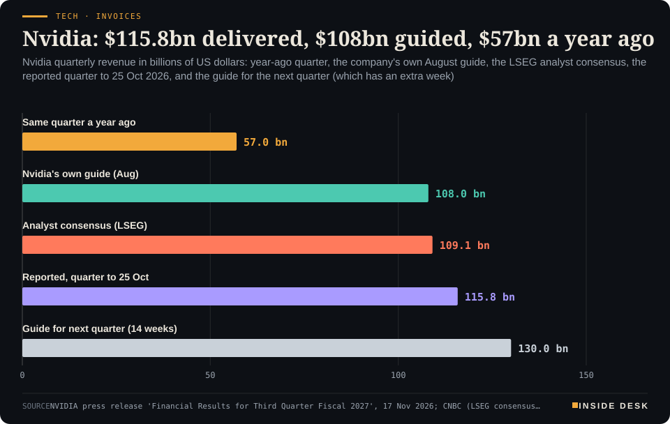
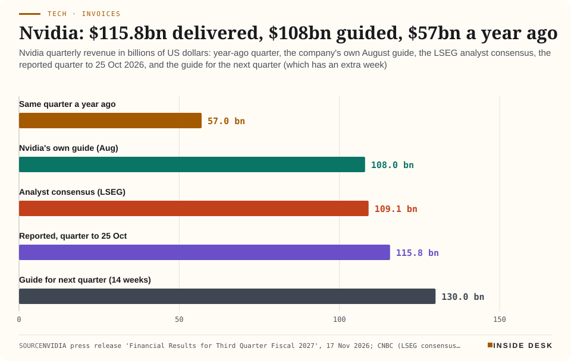
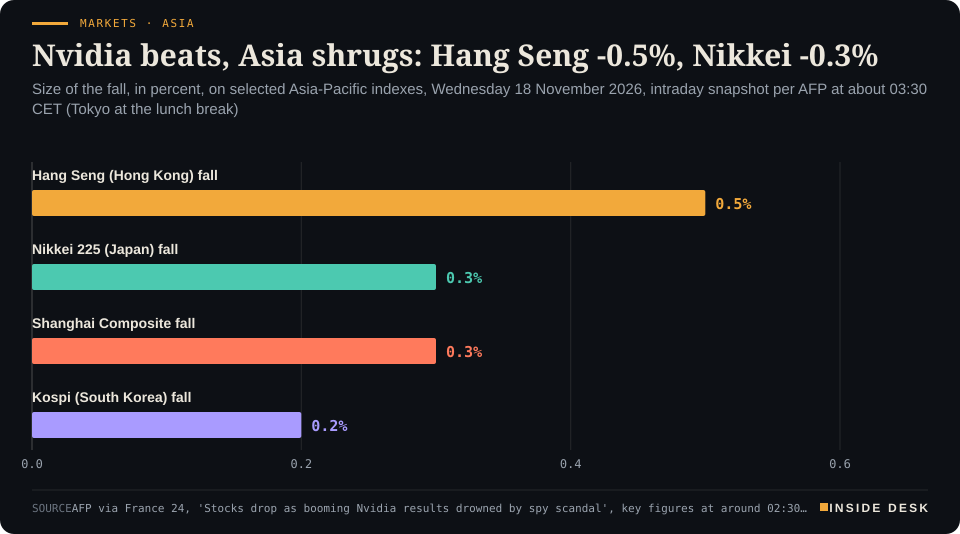
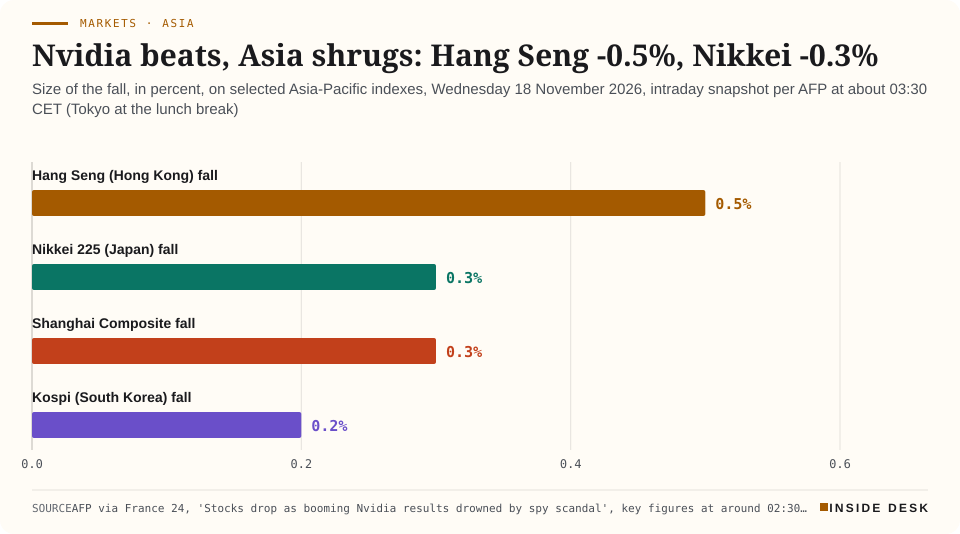

Inside Desk ePaper, Morning ePaper · Wed 18 Nov 2026
Wednesday, 18 November 2026Always free
Inside Desk
Morning ePaperAvailable 06:30 CET · Berlin
Lead · Tech & Compute
The quarter beat the guide by almost $8 billion. Markets in Tokyo and Hong Kong still slipped. The useful question this morning is not whether the number was big, but what has to keep being paid for it.
Nvidia's quarter beat its own guide by almost $8 billion and Asia still drifted lower. Also: an eight-hour coalition night over €5.4 billion, Japan's record exports and record energy bill, Brent down a fifth while Hormuz traffic stays near zero, and the EMA's first flu recipe for mRNA vaccines.
Nvidia sold more than anyone expected and Asia shrugged anyway, Berlin's coalition talked until 2 a.m. about who pays for cheaper electricity, and the useful news was in invoices, customs forms and a flu-strain list, not in speeches.
Geo-economics · p. 4
Markets & Macro · p. 5
Energy & Industry · p. 9
Climate & Weather · p. 15
The day in one sentenceNvidia sold more than anyone expected and Asia shrugged anyway, Berlin's coalition talked until 2 a.m. about who pays for cheaper electricity, and the useful news was in invoices, customs forms and a flu-strain list, not in speeches.
ContentsInside Desk · Morning ePaper18 November 2026
Nvidia's quarter beat its own guide by almost $8 billion and Asia still drifted lower. Also: an eight-hour coalition night over €5.4 billion, Japan's record exports and record energy bill, Brent down a fifth while Hormuz traffic stays near zero, and the EMA's first flu recipe for mRNA vaccines.
11 edition pieces · 11 desks · Available 06:30 CET, 18 November 2026
22 ePaper extras, added , 18 November. They appear only in the ePaper and carry their own time.
17:30 Evening ePaper, updated live until 22:30 with an “Updated” time and a Latest page
Sun 10:00 The Sunday Magazine
Berlin time. Every issue is free.
How to read it
Swipe, use the arrow keys or the page strip. Tap any headline for the reading view. Press / to search, t for contents, +/− to zoom. Download the PDF.
LeadInside Desk · Morning ePaper18 November 2026
Tech & Compute · Lead · 3 min
The quarter beat the guide by almost $8 billion. Markets in Tokyo and Hong Kong still slipped. The useful question this morning is not whether the number was big, but what has to keep being paid for it.
Last night, at about 22:20 Berlin time, the most watched company report of the autumn came out, and it was large. Nvidia booked revenue of $115.8 billion for the quarter to 25 October, up 20% on the previous quarter and 103% on a year earlier1. Data-centre revenue alone was $107.6 billion1. Gross margin was 74.8% on the official (GAAP) measure1. Analysts polled by LSEG had expected $109.10 billion and adjusted earnings of $2.48 a share; Nvidia reported $2.682. In August the company itself had guided to $108 billion4.
Tech · InvoicesNvidia: $115.8bn delivered, $108bn guided, $57bn a year agoNvidia quarterly revenue in billions of US dollars: year-ago quarter, the company's own August guide, the LSEG analyst consensus, the reported quarter to 25 Oct 2026, and the guide for the next quarter (which has an extra week)


Bar chart of Nvidia quarterly revenue in billions of dollars: 57.0 in the same quarter a year earlier, 108.0 guided by the company in August, 109.1 expected by analysts per LSEG, 115.8 reported for the quarter to 25 October 2026, and 130.0 guided for the next quarter, which includes an extra week.
Source: NVIDIA press release 'Financial Results for Third Quarter Fiscal 2027', 17 Nov 2026; CNBC (LSEG consensus, year-ago revenue), 17 Nov 2026; Investopedia (August guide), 17 Nov 2026; retrieved 18 Nov 2026 · reported figures · CSV
The guide is the second invoice. For the current quarter Nvidia expects $130.0 billion, plus or minus 3%, and it assumes no data-centre compute revenue from China1. LSEG’s consensus had been $125.1 billion2. Read the footnote before the headline: the quarter includes an extra week, and Melius Research estimates that the extra week accounts for $9 billion to $10 billion of the sequential jump, CNBC reports3. Take that out and the guide is roughly in line with what the market had already pencilled in. That is not a disappointment. It is arithmetic.
On the call, interim chief executive Colette Kress went further and raised the growth outlook for the next financial year, which ends in January 2028, to 75% from 70%2. “What we need in terms of chips, what we need in terms of advanced packaging or memory, all of that is also coming together,” she said2. Notice what she listed: chips, packaging, memory. Not demand. Supply. For two years the question about this company has been whether customers would keep ordering; the answer on paper is still yes, and the bottleneck she describes is factories, not appetite.
Then the morning. Nvidia’s shares rose roughly 5% in after-hours trading, CNBC and AFP report3,6. Asia did not follow. By about 03:30 CET the Nikkei was down 0.3% at the lunch break, the Hang Seng down 0.5% and the Kospi down 0.2%, AFP’s table shows6. “The momentum in Japan that was lifted by a strong outlook for Nvidia did not last long,” Kazuaki Shimada of IwaiCosmo Securities said, citing worries about the company’s leadership and a possible slowdown in US data-centre construction5. …
Geo-economicsInside Desk · Morning ePaper18 November 2026
Geo-economics · 2 min
October exports hit a record on chip equipment. Imports hit a record on energy. The sixth deficit in a row is the price of oil written in yen.
Japan’s October trade figures, published this morning, read like two different economies. Exports rose 20.5% on a year earlier to a record ¥11.77 trillion, led by semiconductor-related demand1. Shipments of chip-making equipment rose 49.7%, NDTV Profit reports4. Imports rose 21.6% to a record ¥12.25 trillion, driven by higher energy costs1.
The gap is a deficit of ¥476.5 billion, about $3 billion, the sixth in a row and 58% larger than a year earlier1,3. AP attributes the import bill to oil prices that keep imports high2. Japan buys almost all of its crude abroad; when the Gulf’s shipping lanes are disrupted, the invoice arrives in Tokyo in yen, and the yen is weak – the dollar bought 159.48 yen at about 03:30 CET, AFP’s table shows5.
There is a constructive reading. The export side is not a speech about AI; it is order books at equipment makers, shipped and invoiced. The import side is a commodity price, and commodity prices move both ways: Brent has lost about a fifth of its value this month (see Energy). If that holds, the deficit is the part of this report most likely to shrink on its own.
What it is not: proof that the chip boom is over or that it will last. It is one month of customs paperwork, which is precisely why it is worth reading.
Geo-economics · Short item · ePaper extra, added
China hosts APEC for the first time in 12 years. The headline is a three-way meeting with Putin on Thursday; the paperwork is a farm-purchase promise running behind schedule.
Leaders of the 21 APEC economies meet in Shenzhen today and tomorrow, with China hosting for the first time in 12 years, CNA reports1. Donald Trump is due to meet Xi Jinping separately, their third meeting this year, and on Thursday the two are to sit down with Vladimir Putin in what China’s foreign ministry calls a “China-Russia-US heads of state meeting”, the first of its kind1.
The trilateral will get the pictures. The bilateral has the invoices. After the leaders met in Beijing in May, the White House said China had committed to buy at least $17 billion of American farm goods a year on top of soybeans1. China bought $7.2 billion of non-soybean US farm goods between January and September, according to a Reuters analysis cited by CNA1. The trade truce was extended on 9 November and runs until 10 January1. “I think best case, the truce renewal continues beyond Jan 10,” said Drew Thompson of Singapore’s RSIS1.
China wants a Shenzhen declaration and a roadmap for a Free Trade Area of the Asia-Pacific, an idea first endorsed in 20061. A US official called it “more an agenda than it is a kind of destination”1. Watch the purchase figures, not the handshake.
Geo-economics · Brief · ePaper extra, added
Japan’s October exports of semiconductor-manufacturing equipment rose 49.7% on a year earlier, NDTV Profit reports, as total exports reached a record ¥11.77 trillion1,2. That is the upstream end of the AI build-out: tools sold to chipmakers in Taiwan, Korea, China and the US months before the chips themselves are sold. It is also the part most exposed to export licences, which is why the figure is worth tracking month by month rather than celebrating once.
Markets & MacroInside Desk · Morning ePaper18 November 2026
Markets & Macro · 2 min
A strong report after a weak Wall Street day bought an early rally that faded by the midday break. The record in Tokyo was a trade figure, not a price.
Tuesday’s New York session closed before Nvidia reported, and it closed badly. The Dow fell 848.75 points, or 1.64%, to 50,759.42; the S&P 500 lost 1.03% to 7,340.53, its lowest close since late July; the Nasdaq fell 0.74% to 24,328.38 after touching its lowest level since April4. It was the S&P 500’s fourth loss in a row, and the index ended 6.12% below its 6 October record of 7,818.935.
Asia opened with Nvidia’s after-hours gain in hand and gave most of it back. RTHK reports the Nikkei rose as much as 1.3% early before turning lower6. At about 03:30 CET AFP had Tokyo down 0.3% at the lunch break, Seoul down 0.2%, Hong Kong down 0.5% and Shanghai down 0.3%1.
Markets · AsiaNvidia beats, Asia shrugs: Hang Seng -0.5%, Nikkei -0.3%Size of the fall, in percent, on selected Asia-Pacific indexes, Wednesday 18 November 2026, intraday snapshot per AFP at about 03:30 CET (Tokyo at the lunch break)


Bar chart of Wednesday 18 November 2026 percentage changes in Asia at about 03:30 CET, per AFP: Hang Seng down 0.5 percent, Nikkei 225 down 0.3 percent at the lunch break, Shanghai Composite down 0.3 percent and Kospi down 0.2 percent. These are intraday snapshot moves, not closes.
Source: AFP via France 24, 'Stocks drop as booming Nvidia results drowned by spy scandal', key figures at around 02:30 GMT (03:30 CET) on 18 Nov 2026; intraday snapshot, not closing levels; retrieved 18 Nov 2026 · reported figures · CSV
The numbers moved all morning. An earlier snapshot by Kaohoon had the Kospi up 0.27% and the Nikkei down 0.79%2; AP had Seoul up 0.2% at 4,978.16 and Tokyo down 0.6%3. A market in two minds prints a different figure every quarter of an hour. That is why the chart above carries a clock.
Tokyo Electron and Kioxia were among the heavier chip losers, AP and AFP report1,3. Wall Street’s fear index, the VIX, rose 11.13% to 25.46 on Tuesday, Kaohoon notes2. Nothing here is investment advice.
Markets & Macro · Short item · ePaper extra, added
The index closed at its lowest since late July, six weeks after its peak. Breadth was poor: Microsoft alone took ten points off.
The S&P 500 fell 1.03% to 7,340.53 on Tuesday, its fourth loss in a row and its lowest close since 29 July, Portfolio Terminal’s close table shows1. That leaves it 6.12% below the record of 7,818.93 set on 6 October1. The Russell 2000 of smaller companies fell 1.50% to 2,701.871.
The day’s swing was wider than the close. The index fell as much as 1.73% during the session, and the Dow was down more than 1,000 points at its low before ending 848.75 lower, CNBC reports2. Microsoft took about 10.1 points off the S&P 500 on its own, falling 2.27%, while Broadcom added 4.5 points1. The VIX, a gauge of expected volatility, rose 11.13% to 25.463.
Two things worth keeping in proportion. A 6% fall from a record is a pullback, not a crash. …
Markets & Macro · Brief · ePaper extra, added
At about 03:30 CET the euro was at $1.0992, down from $1.1008 on Tuesday, and the dollar bought 159.48 yen, up from 159.34, AFP’s table shows1. The pound was at $1.32051. The backdrop is a US central bank that markets expect to raise rates again: futures price a 25-basis-point hike in December and another in January, Reuters reports, citing CME’s FedWatch tool2. A weaker euro makes dollar-priced oil slightly dearer in Frankfurt than on the screen in New York. Nothing here is investment advice.
Politics & InstitutionsInside Desk · Morning ePaper18 November 2026
Politics & Institutions · Podium vs Print · 2 min
The chancellor expected a quick coalition meeting on cutting the electricity tax for everyone. The leaders left the chancellery at about 2 a.m. with no result announced.
Podium
“dass das relativ kurz wird (that it will be relatively short)”
Friedrich Merz, Federal Chancellor (CDU), as reported by Süddeutsche Zeitung, Tuesday 17 November 2026, before the coalition committee in Berlin
Print€5.4 billion
After more than eight hours the leaders ended the talks; results were to be announced only in the early morning. The main task was finding €5.4 billion to pay for cutting the electricity tax for everyone.
Coalition committee of CDU, CSU and SPD, Federal Chancellery, as reported by Süddeutsche Zeitung with dpa, Tuesday 17 November into Wednesday 18 November 2026, ending around 02:00 CET
The podium. On Tuesday afternoon Chancellor Friedrich Merz went into the coalition committee expecting, in his words, that it would be “relatively short”1. He had renewed his promise to cut the electricity tax for all consumers after the CDU’s defeats in September’s state elections, calling it a gap in credibility to close1.
The print. The meeting ran for more than eight hours. Around 2 a.m. Merz, Vice-Chancellor Lars Klingbeil, CSU leader Markus Söder and the other leaders left the chancellery; results were to be announced only in the early morning1. The central question was arithmetic: how to raise the €5.4 billion a year that, by the finance ministry’s estimate, a general cut would cost1,2. The CDU and CSU proposed using surpluses in the renewable-energy account; the SPD considered that constitutionally risky and rejected cuts to climate-fund programmes; from the SPD came ideas such as raising corporation tax or the flat tax on capital income1. Pensions, mini-jobs and a fuel-price cap were also on the table1.
The gap. The electricity tax is 2.05 cents per kilowatt hour; the EU minimum for households is 0.1 cents2. Today the cut applies only to certain companies1,2. Last week’s budget committee approved spending of €560.9 billion and net borrowing of almost €123 billion in the core budget for 2027, but left the tax cut’s funding open3.
What it means. Eight hours is not failure. It is what deciding who pays looks like. The podium says “everyone”; the print will have to say “from where”. Check this morning’s statement for a line with a number in it.
Politics & Institutions · Short item · ePaper extra, added
Berlin's Franziska Giffey has ruled herself out of the SPD chair. Motions to stop Lars Klingbeil combining party leadership with a ministry are already filed for the party conference.
Franziska Giffey, the Berlin SPD politician, says she will not stand for the chair of the federal party. She told dpa she values Hubertus Heil highly and “expressly” supports his candidacy, Süddeutsche Zeitung reports1. “That does not mean I am keeping my own candidacy open. I will not run for the chair of the federal SPD,” she said1.
The contest has a paper trail. Der Spiegel reported that a broad alliance of the party’s working groups has filed two motions for the SPD conference in January aimed at preventing a renewed candidacy by Lars Klingbeil, according to SZ1. One motion argues the party chair should not, “in the current situation”, be held together with a federal ministry; it is supported by groups including the AfA labour wing, SPD Women and AG 60+1. The Jusos filed a similar motion and favour a woman as sole chair1.
Parties settle leadership questions on conference floors, by vote, after motions are printed and debated. That is slower than a television interview and much more binding. Klingbeil is finance minister and vice-chancellor; he was in the chancellery until about 2 a.m. negotiating over the electricity tax (see the lead desk note)1. The January conference will decide whether one person can carry both briefcases.
Politics & InstitutionsInside Desk · Morning ePaper18 November 2026
The Bundestag’s budget committee ended its final session before dawn on 13 November after more than 15 hours, approving 2027 spending of €560.9 billion and net borrowing of almost €123 billion in the core budget, G+G reports1. The committee dealt with more than 1,500 motions, said CDU/CSU spokesman Christian Haase1. Two items stayed open: funding the electricity-tax cut for everyone, which the coalition committee worked on overnight2, and a “location clause” for pharma companies, for which the economy ministry’s budget so far shows only an empty line1. An empty line is honest. It is also a bill not yet addressed.
Psychology & BehaviourInside Desk · Morning ePaper18 November 2026
Psychology & Behaviour · 2 min
A Japanese study of 6,852 adults finds that regular use of AI for emotional support rises with mental-health need, and so does loneliness. That is a map of unmet demand, not a verdict on the software.
A research letter published in JAMA Network Open on Tuesday looks at a question most debates about chatbots skip: who actually uses them for emotional support. Researchers at Tohoku University and Japan’s National Center of Neurology and Psychiatry used a large Japanese internet survey and grouped 6,852 adults by their level of mental-health need1.
Regular use – generative AI for emotional support a few times a month or more in 2025 – climbed steeply with need: 4.6% in the lower-need group, 9.4% with elevated need, 16.3% with high need and 20.7% among those with both indicators1. Loneliness or social isolation climbed alongside, from 24.7% in the lower-need group to 89.9% in the highest1. Past-year use of mental-health services ran from 1.0% to 35.7%1.
Read the gradient carefully. It does not show that chatbots make people unwell, nor that they help. The design is a survey snapshot, and the models adjust for loneliness, income and professional contacts precisely because so much travels together1. What it shows is where the demand sits: among people who are already struggling and often alone.
That is an argument for dull institutions rather than against new tools: a GP’s waiting list, a counselling service with an evening slot, a helpline that picks up. If one in five of the most distressed are talking to software, the useful response is to make sure a person is also within reach.
Psychology & Behaviour · Short item · ePaper extra, added
Bordeaux researchers followed older adults for three decades. Occasional loneliness showed no significant link to dementia. Persistent loneliness did.
A study in Aging & Mental Health, summarised by Medical Xpress on Tuesday, draws a useful line through a word everybody uses loosely1. Researchers at the Université de Bordeaux used a French cohort of 3,777 adults aged 65 and over, followed from 1988 to 2018, and classified loneliness over eight years as never (48.3%), occasional (34.4%) or chronic (17.3%)1.
Among 1,540 participants still eligible for the 20-year follow-up, dementia developed in 33.1% of the never-lonely, 34.5% of the occasionally lonely and 49.1% of the chronically lonely1. After adjustment, chronic loneliness carried a 38% higher risk than never feeling lonely; occasional loneliness showed no significant association1.
Researchers led by UC San Francisco and UC San Diego analysed about 23,000 participants who wore a smart ring for an average of 154 days, UCSF reports1. On a 0–100 Sleep Regularity Index, people with few or no depressive symptoms averaged 84; those with severe symptoms, 751. Roughly, the first group’s bed and wake times shift by about an hour a day, the second’s by about an hour and a half, said first author Severine Soltani1. Senior author Ashley Mason notes irregular sleep may be a cause or a symptom of poor mental health1. The study was funded partly by the ring’s maker, and Mason has consulted for it1.
Energy & IndustryInside Desk · Morning ePaper18 November 2026
Energy & Industry · 2 min
Brent has lost about a fifth this month even as tankers burn near Hormuz. The market is pricing supply that has come back, not the route that has not.
At about 03:30 CET Brent was down 0.5% at $92.72 a barrel and West Texas Intermediate down 1.0% at $85.18, AFP’s table shows1. Brent has lost about a fifth of its value this month, falling from a six-month high in late October as Middle East supplies recovered and the International Energy Agency flagged a shift to a global surplus, CNBC TV18 reports2. Reuters, via CNBC, cites higher US crude stocks4.
The physical news points the other way. US warplanes struck an Iranian missile site on Qeshm Island on Tuesday, a US official told Bloomberg, according to The Economic Times; Iran’s Mehr agency reported no casualties3. India’s foreign ministry said 21 of 24 Indian crew from the LPG tanker Tara Gas, attacked in Hormuz on 16 November, reached Khasab in Oman; two were in hospital and one was missing2. Straits.live’s brief, citing IMF PortWatch, counts 2 transits through the strait on 15 November against a pre-crisis baseline of 85 a day5.
The Gulf’s own crude moved most: Murban fell 4.22% to $91.39 by 10:35 Singapore time, Gulf News reports, about $1.22 below Brent6.
So the price says “enough oil”; the strait says “not by this road”. Both can be true, because oil is fungible and routes are not. For European buyers the difference shows up in freight, insurance and the delivery date on the contract, not on the screen. Nothing here is investment advice.
Energy & Industry · Short item · ePaper extra, added
TTF fell 7.6% on mild air at the start of the week. EU storage sits almost 19 points below its five-year average for the date.
The Dutch TTF benchmark, the reference for European wholesale gas, fell 7.59% to €84.04 a megawatt hour at the start of this week, closing at the day’s low, GasRadar’s daily briefing reports1. It had touched €93.70 on 12 November1. The proximate cause is weather: a mild pattern for mid-November, with Berlin and Amsterdam around −0.1 °C and Stockholm −3.3 °C on the briefing’s figures1.
The tanks tell a different story. EU storage was 70.39% full, about 18.8 percentage points below the five-year average of 89.2% for the date, GasRadar calculates1. Germany, the largest consumer, sat at 57.3%; the Netherlands at 61.1% and Austria at 63.0%, while Poland and Portugal were above 95%1.
Both readings are honest. Price reflects the next few weeks of demand; storage reflects whether the winter can absorb a cold snap. A mild November lets countries draw less and keep more for February. …
Energy & Industry · Brief · ePaper extra, added
By 10:35 Singapore time (03:35 CET), physical Murban crude had fallen $4.03, or 4.22%, to $91.39 a barrel, Gulf News reports, about $1.22 below Brent; WTI was $85.06 and Brent $92.611. US natural gas futures fell 1.00% to $3.1761. Murban is loaded largely at Fujairah, outside the Strait of Hormuz, so its price is a rough gauge of how much buyers pay for barrels that avoid the strait. Tonight it fell. Nothing here is investment advice.
Money, FX & CommitteesInside Desk · Morning ePaper18 November 2026
Money, FX & Committees · 2 min
Financial analysts grew more hopeful about Germany in November. Their view of the present barely moved. The distance between the two is where the government's borrowing sits.
The ZEW’s survey of financial-market analysts, published on Tuesday, rose 7.5 points in November to plus 35.61. The assessment of the current situation in Germany improved by 2.7 points – to minus 33.21. For the euro area, expectations rose 8.0 points to plus 26.5 while the current situation stayed at minus 14.71.
ZEW President Achim Wambach named the supports: “Increasing manufacturing orders and falling oil prices are likely to underpin the upturn”1. Then the caveat in the same breath: “The mainstay of the recovery has been government expenditure so far, but this leads to rising concerns about the sustainability of public debt”1. Chemicals, pharma and the electrical industry improved; metal manufacturing worsened; construction moved deeper into negative territory1.
That caveat has a number attached. Last week the Bundestag’s budget committee approved net borrowing of almost €123 billion in the core federal budget for 2027, about €4 billion more than the government’s first draft2.
A gap of nearly 70 points between hope and the present is not a contradiction. It is a survey of people who expect public money and cheaper energy to show up in private order books. Whether they do is a question for the ifo survey of companies next week, and for the payroll data after that.
Money, FX & Committees · Short item · ePaper extra, added
Before the coalition met, both sides tabled funding ideas. Each one moves the bill from one group of payers to another.
The question the coalition argued over until 2 a.m. was not whether to cut the electricity tax for everyone, but who pays the €5.4 billion a year that the finance ministry estimates it would cost1,2. The ideas on the table, as Süddeutsche Zeitung lists them, each have a different payer1.
The CDU and CSU proposed using surpluses in the account that funds renewable-energy support; the SPD regarded that as constitutionally risky1. Cuts to programmes in the Climate and Transformation Fund were also rejected1. From the SPD came the idea of raising corporation tax or the flat 25% tax on capital income (Abgeltungsteuer)1. Merz also wanted to address compensation for “cold progression”, the hidden tax rise when inflation pushes wages into higher brackets1.
Read these as transfers. Using an energy-account surplus spends money already raised from electricity users; a corporation-tax rise asks companies; a capital-income tax rise asks savers and investors. None is free, and none is wrong in principle. The test of this morning’s announcement is whether it names one, with a number.
For a household the cut is concrete: StromAuskunft calculates about €58 a year for two people using 2,500 kWh and about €104 for a family of four at 4,500 kWh, if suppliers pass it on in full2. Nothing here is tax or investment advice.
Money, FX & Committees · Brief · ePaper extra, added
The Federal Reserve held its benchmark rate at 3.75–4.00% last month, and futures now price a 25-basis-point rise in December and another in January, Reuters reports, citing CME FedWatch1. Economists expect core PCE inflation, the Fed’s preferred gauge, at 3.2% in the year to October1. Higher US rates tend to lift the dollar and tighten conditions well beyond America, including for European companies borrowing in dollars. Nothing here is investment advice.
Ordinary & Inherited LifeInside Desk · Morning ePaper18 November 2026
Ordinary & Inherited Life · 2 min
US retail sales for October rose modestly while Wall Street sold technology. The part of the report that feeds into growth rose three times as fast as the headline.
On the day the Nasdaq touched an eight-month low, the US Commerce Department reported that retail sales rose 0.2% in October after an unrevised 0.8% in September, in line with forecasts, Reuters reports1. Sales were 6.8% higher than a year earlier, not adjusted for inflation1.
The headline hid a stronger core. Sales excluding cars, petrol, building materials and food services – the measure closest to consumer spending in GDP – rose 0.6%, against a forecast of 0.4%, after an upwardly revised 0.5% in September1. Car dealers’ receipts fell 1.6% and furniture 2.3%; non-store retailers rose 1.2%; miscellaneous stores, including florists and pet shops, jumped 4.7%1.
“More consumers are clearly struggling with rapidly rising prices but are not yet ready to throw in the towel,” said BMO’s Scott Anderson1. Goldman Sachs economists raised their fourth-quarter growth estimate by 0.6 percentage point to 2.4% annualised, according to Reuters1. Import prices rose 1.1% for a second month1.
The ledger’s point is small and stubborn: a payroll is still being spent, mostly on ordinary things, while the market argues about chips. That is not a reason for complacency about prices. It is a reason not to confuse a share index with a household.
Ordinary & Inherited Life · Short item · ePaper extra, added
At 14:30 CET Washington publishes October housing starts and permits. Somewhere a builder has already decided, and the paperwork is about to say so.
Today’s most useful American number will not come from a podium. At 14:30 CET the Commerce Department publishes October housing starts and building permits; the consensus compiled by Dow Jones is 1.25 million starts and 1.38 million permits at an annual rate, MarketScreener reports1. Initial jobless claims for the week to 14 November follow on Thursday, with 197,000 expected1.
Starts are a peculiarly honest statistic. A builder who pours a foundation has borrowed money, hired a crew and bet on a buyer. A permit is a promise to do so. With mortgage rates driven by a Fed that markets expect to raise rates in December2, the gap between the two is a reading on how many builders are still willing to bet.
Tuesday’s retail figures showed building-material store sales up 0.5% in October2. That is a small sign that people are still fixing and finishing houses, even if fewer are starting them.
Treat today’s release as you would a delivery note: a count of things that happened in October, revised later, not a forecast. If it surprises, it will move bond yields within seconds. If it does not, it will still tell you more about the American economy than most of what is said about it this week.
Ordinary & Inherited Life · Brief · ePaper extra, added
Destatis’s weekly preview lists three releases for today: building permits, manufacturing order stocks and quarterly labour-market statistics1. They arrive a day after ZEW analysts cited “increasing manufacturing orders” as a support for Germany’s recovery, while their construction outlook moved deeper into negative territory2. Today’s permits and order-stock figures are where that claim can be checked against the paperwork. Expectations are a survey; an order book is a file.
Tech & ComputeInside Desk · Morning ePaper18 November 2026
The open-model platform Nvidia agreed to buy for $12.9 billion in September is still joining, interim chief executive Colette Kress said. The plan is unchanged; the man who championed it has gone.
On Tuesday’s earnings call, Nvidia’s interim chief executive Colette Kress reaffirmed the company’s commitment to open-source AI, TechCrunch reports1. “At Nvidia, we are committed to fostering a vibrant open model ecosystem, so every country, company, and industry can build its own intelligence,” she said1.
That matters for one deal in particular. In September Nvidia agreed to acquire Hugging Face, a platform for open AI models serving more than 18 million developers and 200,000 companies, for $12.9 billion – what would be the second-largest acquisition in Nvidia’s history1. The release lists the agreement among the quarter’s highlights2. Hugging Face’s chief executive had called Jensen Huang’s departure “a sad day”1. The acquisition was not directly addressed in the analysts’ questions, TechCrunch notes1.
Kress cited a 35-fold year-on-year rise in weekly token volume on OpenRouter, a marketplace that routes requests to many models1. She described Nvidia’s Nemotron family as the “most widely used U.S. open model” there1.
Strategy statements are cheap; closing a deal is not. The test is the completion of the purchase and the terms on which Hugging Face’s platform stays open to models from Nvidia’s rivals. That will be written in contracts, not on calls.
Tech & Compute · Brief · ePaper extra, added
Nvidia’s results release lists plans with supply-chain partners Amkor Technology, Ibiden, King Yuan Electronics, Samsung Electro-Mechanics, Siliconware Precision Industries and Unimicron “to scale critical manufacturing capabilities”1. These are packaging, test and substrate companies, mostly in Taiwan, Japan and Korea. On the call, Kress said that “advanced packaging or memory” was “coming together” with chip supply2. If AI demand has a physical limit this year, it lives in their factories, not in a keynote.
Health & CareInside Desk · Morning ePaper18 November 2026
Health & Care · 2 min
Europe's medicines agency has added nucleic-acid vaccines to its flu-strain advice for 2026/27. It is not an approval. It is the boring step without which no approval matters.
On 17 November the European Medicines Agency updated its 2026/27 seasonal flu recommendations to include mRNA, or nucleic-acid, vaccines for the first time, Europe Pharma Today reports, citing the agency’s news page1,2. Earlier steps, on 7 and 26 May, had set strains for egg-based, cell-based and live-attenuated vaccines1.
For nucleic-acid vaccines the protein sequence should closely match three cell-derived viruses: A/Missouri/11/2025 for H1N1, A/Darwin/1415/2025 for H3N2 and B/Pennsylvania/14/2025 for the B/Victoria lineage1. Egg-based and live vaccines use a different H3N2 (A/Darwin/1454/2025) and a different B virus (B/Tokyo/EIS13-175/2025)1. No B/Yamagata strain is recommended; that lineage has not been detected in circulation since March 2020, matching WHO advice1.
“The advice is a manufacturing target,” the outlet notes, “not a new marketing authorisation, and it does not rank one platform over another”1.
Why it matters at home: flu vaccine supply depends on months of production planned around these lists. A platform that can be retargeted quickly is useful only if the regulator has said what to target. That sentence now exists for mRNA in the EU. This is not medical advice; ask your doctor or pharmacist about this season’s vaccine.
Health & Care · Short item · ePaper extra, added
An old, cheap antibiotic is in short supply from Ireland to Germany. The reasons on the official lists are dull: demand, production delays, logistics.
Clindamycin, an antibiotic used for skin, bone and dental infections among others, was reported short in 10 of the 15 countries tracked by ShortageWatch as of 17 November, covering 16 products from 6 companies1. Germany, Ireland and Austria were added in the past month; Germany’s listing, a 600 mg tablet from ratiopharm, dates from 5 November with an expected return of 15 January 2027, citing increased demand1.
The reasons recorded with national regulators are unglamorous: “increased demand”, “manufacturing problem”, “delay in production”, “distribution”1. Seven of the 16 affected products carry no return date1. Clindamycin is on the EU’s list of critical medicines, and its active ingredient comes mainly from a handful of certified makers, nine of the twelve in China1. Denmark separately reports a supply difficulty for a 2,000 mg ceftazidime hospital antibiotic from Fresenius Kabi2.
Health & Care · Brief · ePaper extra, added
The 2027 federal health budget is set at €15.12 billion, about €6.65 billion less than this year’s €21.77 billion, G+G reports1. The manufacturer discount on patented medicines is due to rise from 7% to 15.5% from 2027; an extended “location clause” is meant to relieve firms that research and employ in Germany, at an estimated €750 million to €1.3 billion1. For now the economy ministry’s budget shows only an empty line for it1. “Instead of clear funding there is so far only an unbudgeted budget heading,” the Pharma Deutschland association said1.
Security & OrderInside Desk · Morning ePaper18 November 2026
Security & Order · 2 min
A classified US network faltered, the agency said it was routine maintenance, and the Dow fell 1,000 points at one stage. Infrastructure resilience is a security question long before it is a cyber story.
US indices hit their session lows on Tuesday after CNN reported that a classified network operated by the National Security Agency had suffered an outage, citing six people familiar with the matter, Sharecast reports; the sources indicated no evidence of a cyberattack1. The NSA then said it had “experienced temporary degradation during scheduled routine maintenance” and that “mission-critical capabilities remain fully operational”1.
The Dow had been down more than 1,000 points at its low before closing 848.75 points lower2. CNBC reports traders citing the outage as adding to jitters about the stability of US technology infrastructure2. Sharecast lists the string: a Federal Aviation Administration ground stop at the weekend, a Microsoft Outlook outage last week and glitches across several banking apps1.
Take the agency at its word: maintenance, not attack. The lesson survives either way. Systems that matter go down for ordinary reasons more often than extraordinary ones, and the public learns of it from leaks rather than notices. A short, timely, factual statement – what failed, for how long, what was affected – is a security measure in itself, because it starves rumour of oxygen. Markets react to silence more than to news.
Security & Order · Short item · ePaper extra, added
Between missile nights, two pieces of humanitarian paperwork are moving. Neither is peace. Both are the kind of thing that precedes it.
After a trilateral meeting in Abu Dhabi, President Volodymyr Zelensky said on Tuesday that Ukraine has proposed a humanitarian operation like the one in Oleshky in 10 more Russian-occupied settlements in Kherson and Zaporizhzhia oblasts, the Kyiv Independent reports1. The Oleshky model was a local ceasefire of a few days that allowed civilians to leave the occupied town1. Discussions would follow with American mediators1.
Zelensky also said Kyiv was preparing a prisoner-of-war exchange, which he called one of the most important agreements of the Abu Dhabi talks on 10–11 November. “We are already communicating through intelligence channels. Ukraine is ready to deliver results in the coming weeks,” he said1. Both sides had confirmed a new “large-scale” exchange when those talks ended1.
On Thursday, US envoys Steve Witkoff and Jared Kushner plan to meet Ukrainian and European officials in Berlin on security guarantees and a post-war recovery plan, a US official told Axios2. Kremlin aide Yuri Ushakov said on Monday that no agreement had been reached on Europe having a seat at the table2.
Corridors and exchanges are small, specific and verifiable: buses leave or they do not, names are on a list or they are not. That is precisely why they matter more than declarations.
Security & Order · Brief · ePaper extra, added
India’s foreign ministry said 21 of the 24 Indian nationals aboard the Panama-flagged LPG tanker Tara Gas, attacked in the Strait of Hormuz on 16 November, had reached the Omani port of Khasab safely; two injured crew were in hospital and one Indian national remained missing, CNBC TV18 reports1. Iran’s Revolutionary Guard claims six tankers have caught fire after striking mines in the strait, a figure no maritime authority has confirmed, Straits.live notes2. Seafarers carry the risk that markets average away.
Climate & WeatherInside Desk · Morning ePaper18 November 2026
Climate & Weather · 2 min
At COP31, Germanwatch's new ranking puts Dominica, Myanmar and Honduras at the top for extreme-weather harm since 1996. Jamaica tops 2025 alone, ahead of Sri Lanka and Spain.
On the day ministers in Antalya picked over an 18-page draft of a possible COP31 outcome, Germanwatch released its Climate Risk Index 2027, UN News reports1. Over the three decades to 2025, Dominica, Myanmar and Honduras were hardest hit by extreme weather1. The index looks at deaths, people affected and economic losses across 178 countries1.
The totals are stark: extreme weather claimed more than 916,000 lives and affected over 5.5 billion people worldwide between 1996 and 2025; heatwaves accounted for 40% of deaths, floods for the largest number of people affected1. For 2025 alone, Jamaica topped the ranking after Hurricane Melissa, ahead of Sri Lanka and Spain1. “Behind these figures are families who lost their homes, children unable to attend school, farmers who lost their crops,” said Honduras’s Vice Minister of Finance Roberto Chang López1.
Spain’s place in the single-year list is a reminder that the index is not only about the tropics. Europe’s floods and heat are in the same ledger.
Meanwhile, the draft decision proposes a pathway to bring forward the tripling of adaptation finance by 2035, Australia’s Chris Bowen said2; it also includes the contested call to “immediately transition away from fossil fuels”, The Guardian reports3. Bowen expects at least one more draft before the week ends2. The index is a reason to read the adaptation paragraphs first.
Climate & Weather · Short item · ePaper extra, added
A train of Pacific storms brings feet of snow to the mountains and up to six inches of rain in the foothills. The water is welcome; the timing is the hazard.
A series of Pacific storms is moving through the US West this week, with winter storm warnings calling for 2 to 4 feet of snow across the Sierra Nevada, The Weather Channel reports1. Along the California coast 3 to 6 inches of rain are possible, and more than 6 inches in the foothills1. Ridge-top gusts could reach 100 mph in the northern Sierra1. Thursday is expected to be the worst travel day through the mountains1. USA Today describes the set-up as an atmospheric river bringing rain and snow2.
The snow is the good news. “The West relies on the snowpack for maintaining a fresh water supply in dry seasons,” the forecasters note, and the snowpack “needs to be filled in”1. An early-season load in the Sierra is the reservoir of next summer.
The rain is the risk, and the reason is timing rather than totals. …
Climate & Weather · Brief · ePaper extra, added
Item 126 of the first COP31 draft cover decision welcomes an “Antalya Compact for Energy Efficient Buildings” aiming to cut the operational energy intensity of the global building stock by at least 25% by 2035 against 2020 levels1. The draft also proposes electrification goals of “35% by 2035”, Chris Bowen said, “taking into account national circumstances”2. Buildings are where climate policy meets household budgets: insulation, heat pumps, windows. The fossil-fuel paragraph will make the headlines; the buildings paragraph is the one most likely to reach your radiator.
Back pageInside Desk · Morning ePaper18 November 2026
Before you close the tab
The day in one sentence
Nvidia sold more than anyone expected and Asia shrugged anyway, Berlin's coalition talked until 2 a.m. about who pays for cheaper electricity, and the useful news was in invoices, customs forms and a flu-strain list, not in speeches.
One thing you can do this week
For three nights this week, pick one bedtime and one getting-up time and keep both, weekend included if you can. No app, no score: a note on the fridge is enough. The point is not more sleep but the same sleep, at the same hour, so the day starts from a known place.
A habit, not advice.
What went right
The World Health Organization has validated Eritrea's elimination of trachoma as a public health problem, making it the 34th country in the world and the 11th in WHO's African Region to do so 1. Trachoma is the world's leading infectious cause of blindness 1. Eritrea surveyed all 58 of its sub-zobas and used surgery, antibiotics, face-washing and better water and sanitation, with a community-led sanitation approach and limited external funding 1. Globally, the population needing interventions against trachoma fell from about 1.5 billion in 2002 to below 100 million by November 2025, a reduction of about 94% 1. "After two decades of determined effort, Eritrea has consigned trachoma as a public health problem to history," said Dr Tedros Adhanom Ghebreyesus 1. Twenty years of surveys and soap is how blindness ends.
In euros at home
Germany's electricity tax is 2.05 cents per kilowatt hour; the EU minimum for households is 0.1 cents 2. Cutting it to the minimum would save about 2.32 cents per kWh including VAT, if suppliers pass it on in full 2. StromAuskunft calculates about €35 a year for a single person using 1,500 kWh, €58 for two people at 2,500 kWh and €104 for a family of four at 4,500 kWh 2. Desk arithmetic: €104 a year is about €8.67 a month, roughly the price of one cinema ticket. The finance ministry puts the cost to the state at about €5.4 billion a year 2; whether and from when the cut comes depends on what the coalition announces this morning.
Desk arithmetic on the cited figures.
Small words
Guidance
A company's own forecast for its next quarter, published with its results. Nvidia guided to $130.0 billion of revenue, plus or minus 3%, for a quarter that has an extra week 3. Markets often react more to the guidance than to the quarter just reported, because the quarter is already paid for and the guidance is not.
Commentary for information only. Not investment, legal, tax, medical or political advice. Inside Desk is free and reader-supported. Every number is sourced in the piece it appears in.
This issue has been updated.
All articles in this edition
Tech & Compute · 3 min read
$115.8 billion delivered and a shrug: Nvidia sends the invoice, Asia reads the footnotes
The quarter beat the guide by almost $8 billion. Markets in Tokyo and Hong Kong still slipped. The useful question this morning is not whether the number was big, but what has to keep being paid for it.
Last night, at about 22:20 Berlin time, the most watched company report of the autumn came out, and it was large. Nvidia booked revenue of $115.8 billion for the quarter to 25 October, up 20% on the previous quarter and 103% on a year earlier1. Data-centre revenue alone was $107.6 billion1. Gross margin was 74.8% on the official (GAAP) measure1. Analysts polled by LSEG had expected $109.10 billion and adjusted earnings of $2.48 a share; Nvidia reported $2.682. In August the company itself had guided to $108 billion4.
Tech · InvoicesNvidia: $115.8bn delivered, $108bn guided, $57bn a year agoNvidia quarterly revenue in billions of US dollars: year-ago quarter, the company's own August guide, the LSEG analyst consensus, the reported quarter to 25 Oct 2026, and the guide for the next quarter (which has an extra week)
Bar chart of Nvidia quarterly revenue in billions of dollars: 57.0 in the same quarter a year earlier, 108.0 guided by the company in August, 109.1 expected by analysts per LSEG, 115.8 reported for the quarter to 25 October 2026, and 130.0 guided for the next quarter, which includes an extra week.
Source: NVIDIA press release 'Financial Results for Third Quarter Fiscal 2027', 17 Nov 2026; CNBC (LSEG consensus, year-ago revenue), 17 Nov 2026; Investopedia (August guide), 17 Nov 2026; retrieved 18 Nov 2026 · reported figures · CSV
The guide is the second invoice. For the current quarter Nvidia expects $130.0 billion, plus or minus 3%, and it assumes no data-centre compute revenue from China1. LSEG’s consensus had been $125.1 billion2. Read the footnote before the headline: the quarter includes an extra week, and Melius Research estimates that the extra week accounts for $9 billion to $10 billion of the sequential jump, CNBC reports3. Take that out and the guide is roughly in line with what the market had already pencilled in. That is not a disappointment. It is arithmetic.
On the call, interim chief executive Colette Kress went further and raised the growth outlook for the next financial year, which ends in January 2028, to 75% from 70%2. “What we need in terms of chips, what we need in terms of advanced packaging or memory, all of that is also coming together,” she said2. Notice what she listed: chips, packaging, memory. Not demand. Supply. For two years the question about this company has been whether customers would keep ordering; the answer on paper is still yes, and the bottleneck she describes is factories, not appetite.
Then the morning. Nvidia’s shares rose roughly 5% in after-hours trading, CNBC and AFP report3,6. Asia did not follow. By about 03:30 CET the Nikkei was down 0.3% at the lunch break, the Hang Seng down 0.5% and the Kospi down 0.2%, AFP’s table shows6. “The momentum in Japan that was lifted by a strong outlook for Nvidia did not last long,” Kazuaki Shimada of IwaiCosmo Securities said, citing worries about the company’s leadership and a possible slowdown in US data-centre construction5. Nvidia is reporting a week after its co-founder Jensen Huang resigned as chief executive2; TechCrunch reports that the Securities and Exchange Commission is examining the company’s disclosures, according to The Wall Street Journal7. Those are matters for the regulator and the board, not for a morning paper to pre-judge.
What the numbers do and do not tell you. They tell you that customers paid. Net income was $65.3 billion in a single quarter, Investopedia notes4. They tell you that the company expects them to keep paying for at least another fourteen weeks. They do not tell you whether the people paying – cloud providers, AI laboratories, sovereign buyers – will earn back what they spend. That answer comes from other invoices: the ones those customers send to their own customers. “Investors should be ready for volatility in the coming weeks,” eToro’s Josh Gilbert told CNBC, even while calling the outlook a clear signal of confidence3.
There is also a quieter line in the release. Nvidia says it shipped its new Vera Rubin rack systems and lists packaging and substrate partners – Amkor, Ibiden, Samsung Electro-Mechanics, Unimicron and others – with whom it plans to scale manufacturing1. That is the dull machinery: substrates, test houses, packaging lines in Taiwan, Korea and Japan. It is also where a market that has fallen four days in a row may eventually find its footing, because orders for packaging lines are harder to talk away than a chief executive’s speech.
So treat this morning’s shrug as information, not as a contradiction. A company can beat its own forecast and still not settle the argument about the whole industry. The beat is a fact. The argument continues on other people’s balance sheets. Nothing here is investment advice.
Desk comment An earnings report is not a verdict on the future. It is a stack of invoices that somebody paid. Read the stack, then read who still has to pay the next one.
¥11.77 trillion out, ¥12.25 trillion in: Japan sells a record and still pays more
October exports hit a record on chip equipment. Imports hit a record on energy. The sixth deficit in a row is the price of oil written in yen.
Japan’s October trade figures, published this morning, read like two different economies. Exports rose 20.5% on a year earlier to a record ¥11.77 trillion, led by semiconductor-related demand1. Shipments of chip-making equipment rose 49.7%, NDTV Profit reports4. Imports rose 21.6% to a record ¥12.25 trillion, driven by higher energy costs1.
The gap is a deficit of ¥476.5 billion, about $3 billion, the sixth in a row and 58% larger than a year earlier1,3. AP attributes the import bill to oil prices that keep imports high2. Japan buys almost all of its crude abroad; when the Gulf’s shipping lanes are disrupted, the invoice arrives in Tokyo in yen, and the yen is weak – the dollar bought 159.48 yen at about 03:30 CET, AFP’s table shows5.
There is a constructive reading. The export side is not a speech about AI; it is order books at equipment makers, shipped and invoiced. The import side is a commodity price, and commodity prices move both ways: Brent has lost about a fifth of its value this month (see Energy). If that holds, the deficit is the part of this report most likely to shrink on its own.
What it is not: proof that the chip boom is over or that it will last. It is one month of customs paperwork, which is precisely why it is worth reading.
Desk comment A country can win the export race and lose the month. The difference is usually one commodity it cannot make at home.
Third meeting this year: Trump and Xi in Shenzhen, with a truce that runs to 10 January
China hosts APEC for the first time in 12 years. The headline is a three-way meeting with Putin on Thursday; the paperwork is a farm-purchase promise running behind schedule.
Leaders of the 21 APEC economies meet in Shenzhen today and tomorrow, with China hosting for the first time in 12 years, CNA reports1. Donald Trump is due to meet Xi Jinping separately, their third meeting this year, and on Thursday the two are to sit down with Vladimir Putin in what China’s foreign ministry calls a “China-Russia-US heads of state meeting”, the first of its kind1.
The trilateral will get the pictures. The bilateral has the invoices. After the leaders met in Beijing in May, the White House said China had committed to buy at least $17 billion of American farm goods a year on top of soybeans1. China bought $7.2 billion of non-soybean US farm goods between January and September, according to a Reuters analysis cited by CNA1. The trade truce was extended on 9 November and runs until 10 January1. “I think best case, the truce renewal continues beyond Jan 10,” said Drew Thompson of Singapore’s RSIS1.
China wants a Shenzhen declaration and a roadmap for a Free Trade Area of the Asia-Pacific, an idea first endorsed in 20061. A US official called it “more an agenda than it is a kind of destination”1. Watch the purchase figures, not the handshake.
Appears only in the ePaper · Commentary for information only. Not advice.
Geo-economics · Brief · ePaper extra, added
49.7% for chip tools: Japan's shipments show where the AI money lands first
Before data centres hum, someone has to ship the machines that make the chips. October's customs data names that someone.
Japan’s October exports of semiconductor-manufacturing equipment rose 49.7% on a year earlier, NDTV Profit reports, as total exports reached a record ¥11.77 trillion1,2. That is the upstream end of the AI build-out: tools sold to chipmakers in Taiwan, Korea, China and the US months before the chips themselves are sold. It is also the part most exposed to export licences, which is why the figure is worth tracking month by month rather than celebrating once.
Appears only in the ePaper · Commentary for information only. Not advice.
Markets & Macro · 2 min read
Nikkei -0.3% at lunch, Kospi -0.2%: Asia takes the beat and keeps its coat on
A strong report after a weak Wall Street day bought an early rally that faded by the midday break. The record in Tokyo was a trade figure, not a price.
Tuesday’s New York session closed before Nvidia reported, and it closed badly. The Dow fell 848.75 points, or 1.64%, to 50,759.42; the S&P 500 lost 1.03% to 7,340.53, its lowest close since late July; the Nasdaq fell 0.74% to 24,328.38 after touching its lowest level since April4. It was the S&P 500’s fourth loss in a row, and the index ended 6.12% below its 6 October record of 7,818.935.
Asia opened with Nvidia’s after-hours gain in hand and gave most of it back. RTHK reports the Nikkei rose as much as 1.3% early before turning lower6. At about 03:30 CET AFP had Tokyo down 0.3% at the lunch break, Seoul down 0.2%, Hong Kong down 0.5% and Shanghai down 0.3%1.
Markets · AsiaNvidia beats, Asia shrugs: Hang Seng -0.5%, Nikkei -0.3%Size of the fall, in percent, on selected Asia-Pacific indexes, Wednesday 18 November 2026, intraday snapshot per AFP at about 03:30 CET (Tokyo at the lunch break)
Bar chart of Wednesday 18 November 2026 percentage changes in Asia at about 03:30 CET, per AFP: Hang Seng down 0.5 percent, Nikkei 225 down 0.3 percent at the lunch break, Shanghai Composite down 0.3 percent and Kospi down 0.2 percent. These are intraday snapshot moves, not closes.
Source: AFP via France 24, 'Stocks drop as booming Nvidia results drowned by spy scandal', key figures at around 02:30 GMT (03:30 CET) on 18 Nov 2026; intraday snapshot, not closing levels; retrieved 18 Nov 2026 · reported figures · CSV
The numbers moved all morning. An earlier snapshot by Kaohoon had the Kospi up 0.27% and the Nikkei down 0.79%2; AP had Seoul up 0.2% at 4,978.16 and Tokyo down 0.6%3. A market in two minds prints a different figure every quarter of an hour. That is why the chart above carries a clock.
Tokyo Electron and Kioxia were among the heavier chip losers, AP and AFP report1,3. Wall Street’s fear index, the VIX, rose 11.13% to 25.46 on Tuesday, Kaohoon notes2. Nothing here is investment advice.
Desk comment An early rally is a mood. A close is a fact. Wait for the second.
Markets & Macro · Short item · ePaper extra, added
7,340.53 and 6.12% below the record: the S&P 500's fourth down day in a row
The index closed at its lowest since late July, six weeks after its peak. Breadth was poor: Microsoft alone took ten points off.
The S&P 500 fell 1.03% to 7,340.53 on Tuesday, its fourth loss in a row and its lowest close since 29 July, Portfolio Terminal’s close table shows1. That leaves it 6.12% below the record of 7,818.93 set on 6 October1. The Russell 2000 of smaller companies fell 1.50% to 2,701.871.
The day’s swing was wider than the close. The index fell as much as 1.73% during the session, and the Dow was down more than 1,000 points at its low before ending 848.75 lower, CNBC reports2. Microsoft took about 10.1 points off the S&P 500 on its own, falling 2.27%, while Broadcom added 4.5 points1. The VIX, a gauge of expected volatility, rose 11.13% to 25.463.
Two things worth keeping in proportion. A 6% fall from a record is a pullback, not a crash. And Tuesday’s close came hours before Nvidia’s report, so today’s session is the first to trade on it (see the Tech lead).
The dull figure to watch is not the index but its breadth: how many shares rise when it rises. On Tuesday the losses were wide, from software to banks1. A recovery led by a handful of chip names alone would be thinner than it looks. Nothing here is investment advice.
Appears only in the ePaper · Commentary for information only. Not advice.
Markets & Macro · Brief · ePaper extra, added
$1.0992: the euro slips under a dollar ten, and the yen sits near 159.5
Small moves overnight, but both point the same way: towards the dollar.
At about 03:30 CET the euro was at $1.0992, down from $1.1008 on Tuesday, and the dollar bought 159.48 yen, up from 159.34, AFP’s table shows1. The pound was at $1.32051. The backdrop is a US central bank that markets expect to raise rates again: futures price a 25-basis-point hike in December and another in January, Reuters reports, citing CME’s FedWatch tool2. A weaker euro makes dollar-priced oil slightly dearer in Frankfurt than on the screen in New York. Nothing here is investment advice.
Appears only in the ePaper · Commentary for information only. Not advice.
Politics & Institutions · 2 min read
Podium vs Print: "relatively short", and eight hours over €5.4 billion
The chancellor expected a quick coalition meeting on cutting the electricity tax for everyone. The leaders left the chancellery at about 2 a.m. with no result announced.
Podium
“dass das relativ kurz wird (that it will be relatively short)”
Friedrich Merz, Federal Chancellor (CDU), as reported by Süddeutsche Zeitung, Tuesday 17 November 2026, before the coalition committee in Berlin
Print€5.4 billion
After more than eight hours the leaders ended the talks; results were to be announced only in the early morning. The main task was finding €5.4 billion to pay for cutting the electricity tax for everyone.
Coalition committee of CDU, CSU and SPD, Federal Chancellery, as reported by Süddeutsche Zeitung with dpa, Tuesday 17 November into Wednesday 18 November 2026, ending around 02:00 CET
The podium. On Tuesday afternoon Chancellor Friedrich Merz went into the coalition committee expecting, in his words, that it would be “relatively short”1. He had renewed his promise to cut the electricity tax for all consumers after the CDU’s defeats in September’s state elections, calling it a gap in credibility to close1.
The print. The meeting ran for more than eight hours. Around 2 a.m. Merz, Vice-Chancellor Lars Klingbeil, CSU leader Markus Söder and the other leaders left the chancellery; results were to be announced only in the early morning1. The central question was arithmetic: how to raise the €5.4 billion a year that, by the finance ministry’s estimate, a general cut would cost1,2. The CDU and CSU proposed using surpluses in the renewable-energy account; the SPD considered that constitutionally risky and rejected cuts to climate-fund programmes; from the SPD came ideas such as raising corporation tax or the flat tax on capital income1. Pensions, mini-jobs and a fuel-price cap were also on the table1.
The gap. The electricity tax is 2.05 cents per kilowatt hour; the EU minimum for households is 0.1 cents2. Today the cut applies only to certain companies1,2. Last week’s budget committee approved spending of €560.9 billion and net borrowing of almost €123 billion in the core budget for 2027, but left the tax cut’s funding open3.
What it means. Eight hours is not failure. It is what deciding who pays looks like. The podium says “everyone”; the print will have to say “from where”. Check this morning’s statement for a line with a number in it.
Desk comment A promise costs nothing on the podium. In the budget it costs exactly what the finance ministry says it costs. The second number is the one you will pay or not pay.
Politics & Institutions · Short item · ePaper extra, added
"I will not run": Giffey backs Heil, and the SPD's leadership question moves to January
Berlin's Franziska Giffey has ruled herself out of the SPD chair. Motions to stop Lars Klingbeil combining party leadership with a ministry are already filed for the party conference.
Franziska Giffey, the Berlin SPD politician, says she will not stand for the chair of the federal party. She told dpa she values Hubertus Heil highly and “expressly” supports his candidacy, Süddeutsche Zeitung reports1. “That does not mean I am keeping my own candidacy open. I will not run for the chair of the federal SPD,” she said1.
The contest has a paper trail. Der Spiegel reported that a broad alliance of the party’s working groups has filed two motions for the SPD conference in January aimed at preventing a renewed candidacy by Lars Klingbeil, according to SZ1. One motion argues the party chair should not, “in the current situation”, be held together with a federal ministry; it is supported by groups including the AfA labour wing, SPD Women and AG 60+1. The Jusos filed a similar motion and favour a woman as sole chair1.
Parties settle leadership questions on conference floors, by vote, after motions are printed and debated. That is slower than a television interview and much more binding. Klingbeil is finance minister and vice-chancellor; he was in the chancellery until about 2 a.m. negotiating over the electricity tax (see the lead desk note)1. The January conference will decide whether one person can carry both briefcases.
1,500 motions, €560.9 billion: the 2027 budget waits for its final vote
The budget committee finished after more than 15 hours last week. Two placeholders remain, one for electricity and one for pharma.
The Bundestag’s budget committee ended its final session before dawn on 13 November after more than 15 hours, approving 2027 spending of €560.9 billion and net borrowing of almost €123 billion in the core budget, G+G reports1. The committee dealt with more than 1,500 motions, said CDU/CSU spokesman Christian Haase1. Two items stayed open: funding the electricity-tax cut for everyone, which the coalition committee worked on overnight2, and a “location clause” for pharma companies, for which the economy ministry’s budget so far shows only an empty line1. An empty line is honest. It is also a bill not yet addressed.
Appears only in the ePaper · Commentary for information only. Not advice.
Psychology & Behaviour · 2 min read
16.3% of the most distressed use a chatbot for comfort: a survey asks who is talking to the machine
A Japanese study of 6,852 adults finds that regular use of AI for emotional support rises with mental-health need, and so does loneliness. That is a map of unmet demand, not a verdict on the software.
A research letter published in JAMA Network Open on Tuesday looks at a question most debates about chatbots skip: who actually uses them for emotional support. Researchers at Tohoku University and Japan’s National Center of Neurology and Psychiatry used a large Japanese internet survey and grouped 6,852 adults by their level of mental-health need1.
Regular use – generative AI for emotional support a few times a month or more in 2025 – climbed steeply with need: 4.6% in the lower-need group, 9.4% with elevated need, 16.3% with high need and 20.7% among those with both indicators1. Loneliness or social isolation climbed alongside, from 24.7% in the lower-need group to 89.9% in the highest1. Past-year use of mental-health services ran from 1.0% to 35.7%1.
Read the gradient carefully. It does not show that chatbots make people unwell, nor that they help. The design is a survey snapshot, and the models adjust for loneliness, income and professional contacts precisely because so much travels together1. What it shows is where the demand sits: among people who are already struggling and often alone.
That is an argument for dull institutions rather than against new tools: a GP’s waiting list, a counselling service with an evening slot, a helpline that picks up. If one in five of the most distressed are talking to software, the useful response is to make sure a person is also within reach.
Desk comment When people pour their worries into a machine, the first question is not what the machine says back. It is why nobody else was listening.
Psychology & Behaviour · Short item · ePaper extra, added
38% higher for the chronically lonely: the word that matters in a 30-year study is "chronic"
Bordeaux researchers followed older adults for three decades. Occasional loneliness showed no significant link to dementia. Persistent loneliness did.
A study in Aging & Mental Health, summarised by Medical Xpress on Tuesday, draws a useful line through a word everybody uses loosely1. Researchers at the Université de Bordeaux used a French cohort of 3,777 adults aged 65 and over, followed from 1988 to 2018, and classified loneliness over eight years as never (48.3%), occasional (34.4%) or chronic (17.3%)1.
Among 1,540 participants still eligible for the 20-year follow-up, dementia developed in 33.1% of the never-lonely, 34.5% of the occasionally lonely and 49.1% of the chronically lonely1. After adjustment, chronic loneliness carried a 38% higher risk than never feeling lonely; occasional loneliness showed no significant association1.
“While most people experience loneliness at some point in their lives, it is when loneliness becomes chronic and persistent that it may increase the risk,” said co-author Karine Pérès1. Another finding cuts against an easy proxy: 29.6% of the chronically lonely did not live alone1.
The limits matter: loneliness was measured with a single question, and the design shows association, not cause1. But the message is calm rather than alarming. A lonely winter is not a diagnosis. Loneliness that lasts years is a signal worth acting on, for neighbours and GPs as much as for the person concerned.
84 against 75: sleep regularity and the mood of 23,000 ring-wearers
A UCSF-led study finds that people with the most irregular sleep timing reported the most severe depression. The arrow may run both ways.
Researchers led by UC San Francisco and UC San Diego analysed about 23,000 participants who wore a smart ring for an average of 154 days, UCSF reports1. On a 0–100 Sleep Regularity Index, people with few or no depressive symptoms averaged 84; those with severe symptoms, 751. Roughly, the first group’s bed and wake times shift by about an hour a day, the second’s by about an hour and a half, said first author Severine Soltani1. Senior author Ashley Mason notes irregular sleep may be a cause or a symptom of poor mental health1. The study was funded partly by the ring’s maker, and Mason has consulted for it1.
Appears only in the ePaper · Commentary for information only. Not advice.
Energy & Industry · 2 min read
$92.72 a barrel and two transits a day: the oil price forgets the strait faster than the ships do
Brent has lost about a fifth this month even as tankers burn near Hormuz. The market is pricing supply that has come back, not the route that has not.
At about 03:30 CET Brent was down 0.5% at $92.72 a barrel and West Texas Intermediate down 1.0% at $85.18, AFP’s table shows1. Brent has lost about a fifth of its value this month, falling from a six-month high in late October as Middle East supplies recovered and the International Energy Agency flagged a shift to a global surplus, CNBC TV18 reports2. Reuters, via CNBC, cites higher US crude stocks4.
The physical news points the other way. US warplanes struck an Iranian missile site on Qeshm Island on Tuesday, a US official told Bloomberg, according to The Economic Times; Iran’s Mehr agency reported no casualties3. India’s foreign ministry said 21 of 24 Indian crew from the LPG tanker Tara Gas, attacked in Hormuz on 16 November, reached Khasab in Oman; two were in hospital and one was missing2. Straits.live’s brief, citing IMF PortWatch, counts 2 transits through the strait on 15 November against a pre-crisis baseline of 85 a day5.
The Gulf’s own crude moved most: Murban fell 4.22% to $91.39 by 10:35 Singapore time, Gulf News reports, about $1.22 below Brent6.
So the price says “enough oil”; the strait says “not by this road”. Both can be true, because oil is fungible and routes are not. For European buyers the difference shows up in freight, insurance and the delivery date on the contract, not on the screen. Nothing here is investment advice.
Desk comment A price is an average of opinions about the future. A transit count is a fact about yesterday. When they disagree, keep both on the desk.
Energy & Industry · Short item · ePaper extra, added
€84.04 a MWh and 70.4% full: Europe's gas trades the weather, the tanks trade the winter
TTF fell 7.6% on mild air at the start of the week. EU storage sits almost 19 points below its five-year average for the date.
The Dutch TTF benchmark, the reference for European wholesale gas, fell 7.59% to €84.04 a megawatt hour at the start of this week, closing at the day’s low, GasRadar’s daily briefing reports1. It had touched €93.70 on 12 November1. The proximate cause is weather: a mild pattern for mid-November, with Berlin and Amsterdam around −0.1 °C and Stockholm −3.3 °C on the briefing’s figures1.
The tanks tell a different story. EU storage was 70.39% full, about 18.8 percentage points below the five-year average of 89.2% for the date, GasRadar calculates1. Germany, the largest consumer, sat at 57.3%; the Netherlands at 61.1% and Austria at 63.0%, while Poland and Portugal were above 95%1.
Both readings are honest. Price reflects the next few weeks of demand; storage reflects whether the winter can absorb a cold snap. A mild November lets countries draw less and keep more for February. That is the constructive part: every warm week now is gas left in the ground for later.
For households, the wholesale price reaches the bill with a lag of months, through supplier contracts. A falling TTF in November is not a lower bill in December. It is a slightly better starting point for next year’s tariffs. Nothing here is investment advice.
Appears only in the ePaper · Commentary for information only. Not advice.
Energy & Industry · Brief · ePaper extra, added
Minus 4.22% for Murban: the Gulf's own crude falls hardest
Abu Dhabi's grade dropped below Brent overnight, a sign that buyers are less worried about Gulf barrels than about the route out.
By 10:35 Singapore time (03:35 CET), physical Murban crude had fallen $4.03, or 4.22%, to $91.39 a barrel, Gulf News reports, about $1.22 below Brent; WTI was $85.06 and Brent $92.611. US natural gas futures fell 1.00% to $3.1761. Murban is loaded largely at Fujairah, outside the Strait of Hormuz, so its price is a rough gauge of how much buyers pay for barrels that avoid the strait. Tonight it fell. Nothing here is investment advice.
Appears only in the ePaper · Commentary for information only. Not advice.
Money, FX & Committees · 2 min read
Plus 35.6 expected, minus 33.2 today: the ZEW gap is the economy waiting for its own invoices
Financial analysts grew more hopeful about Germany in November. Their view of the present barely moved. The distance between the two is where the government's borrowing sits.
The ZEW’s survey of financial-market analysts, published on Tuesday, rose 7.5 points in November to plus 35.61. The assessment of the current situation in Germany improved by 2.7 points – to minus 33.21. For the euro area, expectations rose 8.0 points to plus 26.5 while the current situation stayed at minus 14.71.
ZEW President Achim Wambach named the supports: “Increasing manufacturing orders and falling oil prices are likely to underpin the upturn”1. Then the caveat in the same breath: “The mainstay of the recovery has been government expenditure so far, but this leads to rising concerns about the sustainability of public debt”1. Chemicals, pharma and the electrical industry improved; metal manufacturing worsened; construction moved deeper into negative territory1.
That caveat has a number attached. Last week the Bundestag’s budget committee approved net borrowing of almost €123 billion in the core federal budget for 2027, about €4 billion more than the government’s first draft2.
A gap of nearly 70 points between hope and the present is not a contradiction. It is a survey of people who expect public money and cheaper energy to show up in private order books. Whether they do is a question for the ifo survey of companies next week, and for the payroll data after that.
Desk comment Expectations are cheap to raise and expensive to meet. The meeting happens in order books and payrolls, months later.
Money, FX & Committees · Short item · ePaper extra, added
Corporation tax or capital gains: the SPD's list for paying a €5.4 billion electricity cut
Before the coalition met, both sides tabled funding ideas. Each one moves the bill from one group of payers to another.
The question the coalition argued over until 2 a.m. was not whether to cut the electricity tax for everyone, but who pays the €5.4 billion a year that the finance ministry estimates it would cost1,2. The ideas on the table, as Süddeutsche Zeitung lists them, each have a different payer1.
The CDU and CSU proposed using surpluses in the account that funds renewable-energy support; the SPD regarded that as constitutionally risky1. Cuts to programmes in the Climate and Transformation Fund were also rejected1. From the SPD came the idea of raising corporation tax or the flat 25% tax on capital income (Abgeltungsteuer)1. Merz also wanted to address compensation for “cold progression”, the hidden tax rise when inflation pushes wages into higher brackets1.
Read these as transfers. Using an energy-account surplus spends money already raised from electricity users; a corporation-tax rise asks companies; a capital-income tax rise asks savers and investors. None is free, and none is wrong in principle. The test of this morning’s announcement is whether it names one, with a number.
For a household the cut is concrete: StromAuskunft calculates about €58 a year for two people using 2,500 kWh and about €104 for a family of four at 4,500 kWh, if suppliers pass it on in full2. Nothing here is tax or investment advice.
Appears only in the ePaper · Commentary for information only. Not advice.
Money, FX & Committees · Brief · ePaper extra, added
December and January: the Fed hikes markets are pricing
US retail data did nothing to talk traders out of higher rates.
The Federal Reserve held its benchmark rate at 3.75–4.00% last month, and futures now price a 25-basis-point rise in December and another in January, Reuters reports, citing CME FedWatch1. Economists expect core PCE inflation, the Fed’s preferred gauge, at 3.2% in the year to October1. Higher US rates tend to lift the dollar and tighten conditions well beyond America, including for European companies borrowing in dollars. Nothing here is investment advice.
Appears only in the ePaper · Commentary for information only. Not advice.
Ordinary & Inherited Life · 2 min read
Ordinary Ledger: 0.2% on the till, 0.6% underneath, and 4.7% more at the florist
US retail sales for October rose modestly while Wall Street sold technology. The part of the report that feeds into growth rose three times as fast as the headline.
On the day the Nasdaq touched an eight-month low, the US Commerce Department reported that retail sales rose 0.2% in October after an unrevised 0.8% in September, in line with forecasts, Reuters reports1. Sales were 6.8% higher than a year earlier, not adjusted for inflation1.
The headline hid a stronger core. Sales excluding cars, petrol, building materials and food services – the measure closest to consumer spending in GDP – rose 0.6%, against a forecast of 0.4%, after an upwardly revised 0.5% in September1. Car dealers’ receipts fell 1.6% and furniture 2.3%; non-store retailers rose 1.2%; miscellaneous stores, including florists and pet shops, jumped 4.7%1.
“More consumers are clearly struggling with rapidly rising prices but are not yet ready to throw in the towel,” said BMO’s Scott Anderson1. Goldman Sachs economists raised their fourth-quarter growth estimate by 0.6 percentage point to 2.4% annualised, according to Reuters1. Import prices rose 1.1% for a second month1.
The ledger’s point is small and stubborn: a payroll is still being spent, mostly on ordinary things, while the market argues about chips. That is not a reason for complacency about prices. It is a reason not to confuse a share index with a household.
Desk comment Households do not read the Nasdaq before they buy dog food. That is why the till is a better witness than the screen.
Ordinary & Inherited Life · Short item · ePaper extra, added
1.25 million expected: the housing starts that will say more than a speech today
At 14:30 CET Washington publishes October housing starts and permits. Somewhere a builder has already decided, and the paperwork is about to say so.
Today’s most useful American number will not come from a podium. At 14:30 CET the Commerce Department publishes October housing starts and building permits; the consensus compiled by Dow Jones is 1.25 million starts and 1.38 million permits at an annual rate, MarketScreener reports1. Initial jobless claims for the week to 14 November follow on Thursday, with 197,000 expected1.
Starts are a peculiarly honest statistic. A builder who pours a foundation has borrowed money, hired a crew and bet on a buyer. A permit is a promise to do so. With mortgage rates driven by a Fed that markets expect to raise rates in December2, the gap between the two is a reading on how many builders are still willing to bet.
Tuesday’s retail figures showed building-material store sales up 0.5% in October2. That is a small sign that people are still fixing and finishing houses, even if fewer are starting them.
Treat today’s release as you would a delivery note: a count of things that happened in October, revised later, not a forecast. If it surprises, it will move bond yields within seconds. If it does not, it will still tell you more about the American economy than most of what is said about it this week.
Appears only in the ePaper · Commentary for information only. Not advice.
Ordinary & Inherited Life · Brief · ePaper extra, added
Permits, order books and jobs: Destatis publishes the quiet three today
Three releases from the Federal Statistical Office, none of them headline material, all of them useful.
Destatis’s weekly preview lists three releases for today: building permits, manufacturing order stocks and quarterly labour-market statistics1. They arrive a day after ZEW analysts cited “increasing manufacturing orders” as a support for Germany’s recovery, while their construction outlook moved deeper into negative territory2. Today’s permits and order-stock figures are where that claim can be checked against the paperwork. Expectations are a survey; an order book is a file.
Sources
Weekly preview — Destatis (Federal Statistical Office), Nov 2026
Appears only in the ePaper · Commentary for information only. Not advice.
Tech & Compute · Short item · ePaper extra, added
18 million developers, one deal: Nvidia says the Hugging Face purchase stays on track
The open-model platform Nvidia agreed to buy for $12.9 billion in September is still joining, interim chief executive Colette Kress said. The plan is unchanged; the man who championed it has gone.
On Tuesday’s earnings call, Nvidia’s interim chief executive Colette Kress reaffirmed the company’s commitment to open-source AI, TechCrunch reports1. “At Nvidia, we are committed to fostering a vibrant open model ecosystem, so every country, company, and industry can build its own intelligence,” she said1.
That matters for one deal in particular. In September Nvidia agreed to acquire Hugging Face, a platform for open AI models serving more than 18 million developers and 200,000 companies, for $12.9 billion – what would be the second-largest acquisition in Nvidia’s history1. The release lists the agreement among the quarter’s highlights2. Hugging Face’s chief executive had called Jensen Huang’s departure “a sad day”1. The acquisition was not directly addressed in the analysts’ questions, TechCrunch notes1.
Kress cited a 35-fold year-on-year rise in weekly token volume on OpenRouter, a marketplace that routes requests to many models1. She described Nvidia’s Nemotron family as the “most widely used U.S. open model” there1.
Strategy statements are cheap; closing a deal is not. The test is the completion of the purchase and the terms on which Hugging Face’s platform stays open to models from Nvidia’s rivals. That will be written in contracts, not on calls.
Appears only in the ePaper · Commentary for information only. Not advice.
Tech & Compute · Brief · ePaper extra, added
Amkor, Ibiden, Unimicron: the names in the release that do the actual work
Behind every AI rack is a packaging line and a substrate factory. Nvidia's release names six of them.
Nvidia’s results release lists plans with supply-chain partners Amkor Technology, Ibiden, King Yuan Electronics, Samsung Electro-Mechanics, Siliconware Precision Industries and Unimicron “to scale critical manufacturing capabilities”1. These are packaging, test and substrate companies, mostly in Taiwan, Japan and Korea. On the call, Kress said that “advanced packaging or memory” was “coming together” with chip supply2. If AI demand has a physical limit this year, it lives in their factories, not in a keynote.
Appears only in the ePaper · Commentary for information only. Not advice.
Health & Care · 2 min read
Three strains for the mRNA flu shot: the EMA writes the recipe before anyone sells the dish
Europe's medicines agency has added nucleic-acid vaccines to its flu-strain advice for 2026/27. It is not an approval. It is the boring step without which no approval matters.
On 17 November the European Medicines Agency updated its 2026/27 seasonal flu recommendations to include mRNA, or nucleic-acid, vaccines for the first time, Europe Pharma Today reports, citing the agency’s news page1,2. Earlier steps, on 7 and 26 May, had set strains for egg-based, cell-based and live-attenuated vaccines1.
For nucleic-acid vaccines the protein sequence should closely match three cell-derived viruses: A/Missouri/11/2025 for H1N1, A/Darwin/1415/2025 for H3N2 and B/Pennsylvania/14/2025 for the B/Victoria lineage1. Egg-based and live vaccines use a different H3N2 (A/Darwin/1454/2025) and a different B virus (B/Tokyo/EIS13-175/2025)1. No B/Yamagata strain is recommended; that lineage has not been detected in circulation since March 2020, matching WHO advice1.
“The advice is a manufacturing target,” the outlet notes, “not a new marketing authorisation, and it does not rank one platform over another”1.
Why it matters at home: flu vaccine supply depends on months of production planned around these lists. A platform that can be retargeted quickly is useful only if the regulator has said what to target. That sentence now exists for mRNA in the EU. This is not medical advice; ask your doctor or pharmacist about this season’s vaccine.
Desk comment Before a vaccine reaches an arm, somebody has to agree which virus it is aimed at. That agreement is dull, technical and published. Good.
10 of 15 countries short of clindamycin, and the boring cure is a second factory
An old, cheap antibiotic is in short supply from Ireland to Germany. The reasons on the official lists are dull: demand, production delays, logistics.
Clindamycin, an antibiotic used for skin, bone and dental infections among others, was reported short in 10 of the 15 countries tracked by ShortageWatch as of 17 November, covering 16 products from 6 companies1. Germany, Ireland and Austria were added in the past month; Germany’s listing, a 600 mg tablet from ratiopharm, dates from 5 November with an expected return of 15 January 2027, citing increased demand1.
The reasons recorded with national regulators are unglamorous: “increased demand”, “manufacturing problem”, “delay in production”, “distribution”1. Seven of the 16 affected products carry no return date1. Clindamycin is on the EU’s list of critical medicines, and its active ingredient comes mainly from a handful of certified makers, nine of the twelve in China1. Denmark separately reports a supply difficulty for a 2,000 mg ceftazidime hospital antibiotic from Fresenius Kabi2.
This is the textbook case of a medicine that is old, cheap and made by many companies competing on price – exactly the profile that runs short. The fix is not a speech about sovereignty. It is contracts that pay a little more for a second source and a buffer stock, and the patience to keep paying for them in years when nothing goes wrong.
If you have a prescription, ask your pharmacist about alternatives; do not stop or change treatment on your own. This is not medical advice.
Appears only in the ePaper · Commentary for information only. Not advice.
Health & Care · Brief · ePaper extra, added
€15.12 billion for health, and a blank line for the pharma clause
The 2027 health budget is €6.65 billion smaller than this year's. The promised relief for researching drugmakers has a heading but no money yet.
The 2027 federal health budget is set at €15.12 billion, about €6.65 billion less than this year’s €21.77 billion, G+G reports1. The manufacturer discount on patented medicines is due to rise from 7% to 15.5% from 2027; an extended “location clause” is meant to relieve firms that research and employ in Germany, at an estimated €750 million to €1.3 billion1. For now the economy ministry’s budget shows only an empty line for it1. “Instead of clear funding there is so far only an unbudgeted budget heading,” the Pharma Deutschland association said1.
Appears only in the ePaper · Commentary for information only. Not advice.
Security & Order · 2 min read
The Annex: "temporary degradation", and a week of small outages that added up to a big mood
A classified US network faltered, the agency said it was routine maintenance, and the Dow fell 1,000 points at one stage. Infrastructure resilience is a security question long before it is a cyber story.
US indices hit their session lows on Tuesday after CNN reported that a classified network operated by the National Security Agency had suffered an outage, citing six people familiar with the matter, Sharecast reports; the sources indicated no evidence of a cyberattack1. The NSA then said it had “experienced temporary degradation during scheduled routine maintenance” and that “mission-critical capabilities remain fully operational”1.
The Dow had been down more than 1,000 points at its low before closing 848.75 points lower2. CNBC reports traders citing the outage as adding to jitters about the stability of US technology infrastructure2. Sharecast lists the string: a Federal Aviation Administration ground stop at the weekend, a Microsoft Outlook outage last week and glitches across several banking apps1.
Take the agency at its word: maintenance, not attack. The lesson survives either way. Systems that matter go down for ordinary reasons more often than extraordinary ones, and the public learns of it from leaks rather than notices. A short, timely, factual statement – what failed, for how long, what was affected – is a security measure in itself, because it starves rumour of oxygen. Markets react to silence more than to news.
Desk comment Most failures are not attacks. They are maintenance windows that ran long. A serious country plans for both.
Security & Order · Short item · ePaper extra, added
Ten more settlements: Ukraine asks for Oleshky-style evacuations, and a prisoner exchange is prepared
Between missile nights, two pieces of humanitarian paperwork are moving. Neither is peace. Both are the kind of thing that precedes it.
After a trilateral meeting in Abu Dhabi, President Volodymyr Zelensky said on Tuesday that Ukraine has proposed a humanitarian operation like the one in Oleshky in 10 more Russian-occupied settlements in Kherson and Zaporizhzhia oblasts, the Kyiv Independent reports1. The Oleshky model was a local ceasefire of a few days that allowed civilians to leave the occupied town1. Discussions would follow with American mediators1.
Zelensky also said Kyiv was preparing a prisoner-of-war exchange, which he called one of the most important agreements of the Abu Dhabi talks on 10–11 November. “We are already communicating through intelligence channels. Ukraine is ready to deliver results in the coming weeks,” he said1. Both sides had confirmed a new “large-scale” exchange when those talks ended1.
On Thursday, US envoys Steve Witkoff and Jared Kushner plan to meet Ukrainian and European officials in Berlin on security guarantees and a post-war recovery plan, a US official told Axios2. Kremlin aide Yuri Ushakov said on Monday that no agreement had been reached on Europe having a seat at the table2.
Corridors and exchanges are small, specific and verifiable: buses leave or they do not, names are on a list or they are not. That is precisely why they matter more than declarations.
Appears only in the ePaper · Commentary for information only. Not advice.
Security & Order · Brief · ePaper extra, added
21 of 24 reached Khasab: one sailor still missing from the Tara Gas
Behind the oil price is a crew list.
India’s foreign ministry said 21 of the 24 Indian nationals aboard the Panama-flagged LPG tanker Tara Gas, attacked in the Strait of Hormuz on 16 November, had reached the Omani port of Khasab safely; two injured crew were in hospital and one Indian national remained missing, CNBC TV18 reports1. Iran’s Revolutionary Guard claims six tankers have caught fire after striking mines in the strait, a figure no maritime authority has confirmed, Straits.live notes2. Seafarers carry the risk that markets average away.
Appears only in the ePaper · Commentary for information only. Not advice.
Climate & Weather · 2 min read
More than 916,000 dead in 30 years: the climate risk index counts what the draft text argues about
At COP31, Germanwatch's new ranking puts Dominica, Myanmar and Honduras at the top for extreme-weather harm since 1996. Jamaica tops 2025 alone, ahead of Sri Lanka and Spain.
On the day ministers in Antalya picked over an 18-page draft of a possible COP31 outcome, Germanwatch released its Climate Risk Index 2027, UN News reports1. Over the three decades to 2025, Dominica, Myanmar and Honduras were hardest hit by extreme weather1. The index looks at deaths, people affected and economic losses across 178 countries1.
The totals are stark: extreme weather claimed more than 916,000 lives and affected over 5.5 billion people worldwide between 1996 and 2025; heatwaves accounted for 40% of deaths, floods for the largest number of people affected1. For 2025 alone, Jamaica topped the ranking after Hurricane Melissa, ahead of Sri Lanka and Spain1. “Behind these figures are families who lost their homes, children unable to attend school, farmers who lost their crops,” said Honduras’s Vice Minister of Finance Roberto Chang López1.
Spain’s place in the single-year list is a reminder that the index is not only about the tropics. Europe’s floods and heat are in the same ledger.
Meanwhile, the draft decision proposes a pathway to bring forward the tripling of adaptation finance by 2035, Australia’s Chris Bowen said2; it also includes the contested call to “immediately transition away from fossil fuels”, The Guardian reports3. Bowen expects at least one more draft before the week ends2. The index is a reason to read the adaptation paragraphs first.
Desk comment A negotiation is about words. An index is about bodies and roofs. Keep the second open while reading the first.
Climate & Weather · Short item · ePaper extra, added
2 to 4 feet in the Sierra: California's storms fill the snowpack and fill the gullies
A train of Pacific storms brings feet of snow to the mountains and up to six inches of rain in the foothills. The water is welcome; the timing is the hazard.
A series of Pacific storms is moving through the US West this week, with winter storm warnings calling for 2 to 4 feet of snow across the Sierra Nevada, The Weather Channel reports1. Along the California coast 3 to 6 inches of rain are possible, and more than 6 inches in the foothills1. Ridge-top gusts could reach 100 mph in the northern Sierra1. Thursday is expected to be the worst travel day through the mountains1. USA Today describes the set-up as an atmospheric river bringing rain and snow2.
The snow is the good news. “The West relies on the snowpack for maintaining a fresh water supply in dry seasons,” the forecasters note, and the snowpack “needs to be filled in”1. An early-season load in the Sierra is the reservoir of next summer.
The rain is the risk, and the reason is timing rather than totals. Each storm may not bring much on its own, but soils have little time to dry between rounds, raising the chance of flooding, landslides and debris flows; flash-flood watches are posted along the coast, with mudslides possible around recent burn scars1.
Adaptation here is unglamorous: cleared culverts, closed roads, chain controls, sandbags placed before the second storm rather than after the third. California has practised it for decades. The test this week is whether the practice holds.
Appears only in the ePaper · Commentary for information only. Not advice.
Climate & Weather · Brief · ePaper extra, added
25% by 2035: a buildings compact hides in item 126 of the COP31 draft
Not every line in Antalya is a fight over fossil fuels. Some are about boilers and insulation.
Item 126 of the first COP31 draft cover decision welcomes an “Antalya Compact for Energy Efficient Buildings” aiming to cut the operational energy intensity of the global building stock by at least 25% by 2035 against 2020 levels1. The draft also proposes electrification goals of “35% by 2035”, Chris Bowen said, “taking into account national circumstances”2. Buildings are where climate policy meets household budgets: insulation, heat pumps, windows. The fossil-fuel paragraph will make the headlines; the buildings paragraph is the one most likely to reach your radiator.